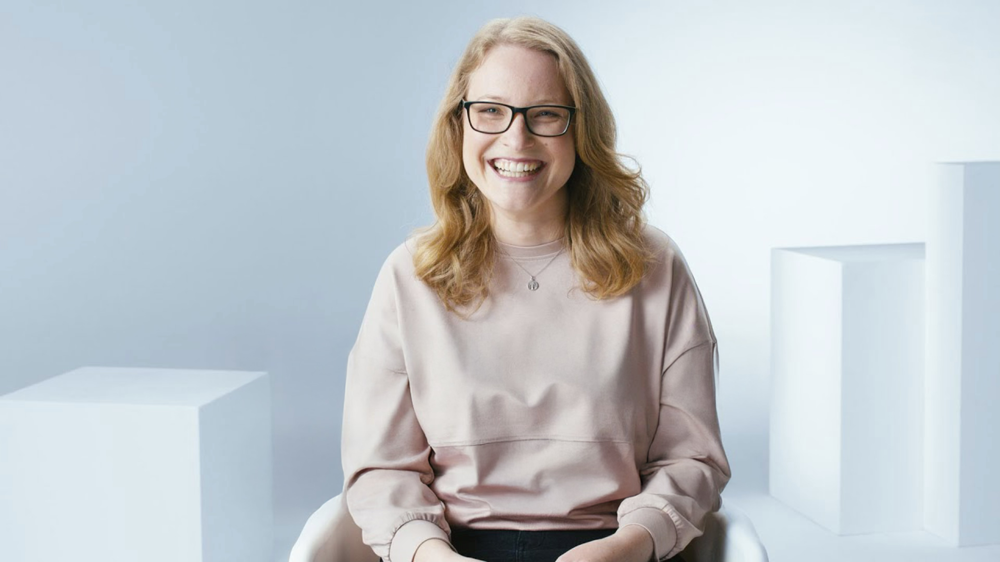

ZEISS
Die Story
Der Arbeitsmarkt ist umkämpft. Ganz besonders für Unternehmen wie ZEISS: Denn die Oberkochener arbeiten an Spitzentechnologie, für die es wissenschaftliche und technologische Exzellenz braucht.
Daher haben wir für ZEISS eine Employer Branding PR-Strategie erarbeitet und umgesetzt – zugeschnitten auf extrem spitze, hochqualifizierte Zielgruppen.


Formate & Kanäle
Vom wissenschaftlichen Fachmagazin bis zum nischigen Podcast – für jede Zielgruppe definierten wir den passenden Kanal und die passende Erzählform. Unser Sprachrohr: die Menschen, die bei ZEISS arbeiten – ihre Geschichten, ihre Expertise, ihre Leidenschaft für Präzision.


Strategische Grundlage
Wo erreicht man Physikerinnen mit Schwerpunkt Optik? Wie macht man Codern, die von Google und Meta träumen Oberkochen schmackhaft? Und was macht eigentlich eine Sternenfädlerin? Antworten gab unsere ausgefeilte Medien- und Zielgruppenstrategie.
Egal ob dieser spezielle Case oder eine aktuelle Herausforderung — ich freue mich über den persönlichen Austausch.
MAIL ME.